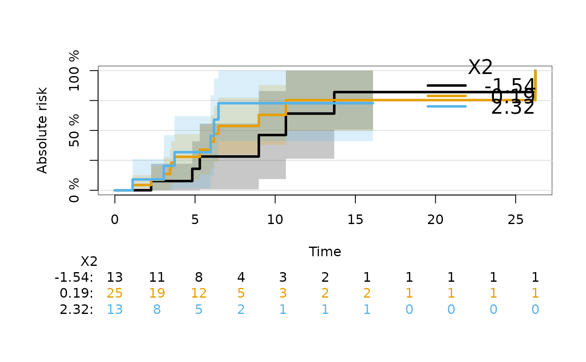

This function is used internally to obtain inverse of the probability of censoring weights.
Arguments
- formula
A survival formula like,
Surv(time,status)~1, where as usual status=0 means censored. The status variable is internally reversed for estimation of censoring rather than survival probabilities. Some of the available models (see argumentmodel) will use predictors on the right hand side of the formula.- data
The data used for fitting the censoring model
- method
Censoring model used for estimation of the (conditional) censoring distribution.
- args
A list of arguments which is passed to method
- times
For
what="IPCW.times"a vector of times at which to compute the probabilities of not being censored.- subject.times
For
what="IPCW.subject.times"a vector of individual times at which the probabilities of not being censored are computed.- lag
If equal to
1then obtainG(T_i-|X_i), if equal to0estimate the conditional censoring distribution at the subject.times, i.e. (G(T_i|X_i)).- what
Decide about what to do: If equal to
"IPCW.times"then weights are estimated at giventimes. If equal to"IPCW.subject.times"then weights are estimated at individualsubject.times. If missing then produce both.- keep
Which elements to add to the output. Any subset of the vector
c("times","fit","call").
Value
A list with elements depending on argument keep.
- times
The times at which weights are estimated
- IPCW.times
Estimated weights at
times- IPCW.subject.times
Estimated weights at individual time values
subject.times- fit
The fitted censoring model
- method
The method for modelling the censoring distribution
- call
The call
Details
Inverse of the probability of censoring weights (IPCW) usually refer to the probabilities of not being censored at certain time points. These probabilities are also the values of the conditional survival function of the censoring time given covariates. The function ipcw estimates the conditional survival function of the censoring times and derives the weights.
IMPORTANT: the data set should be ordered, order(time,-status) in
order to get the values IPCW.subject.times in the right order for some
choices of method.
Author
Thomas A. Gerds tag@biostat.ku.dk
Examples
library(prodlim)
library(rms)
dat=SimSurv(30)
dat <- dat[order(dat$time),]
# using the marginal Kaplan-Meier for the censoring times
WKM=ipcw(Hist(time,status)~X2,
data=dat,
method="marginal",
times=sort(unique(dat$time)),
subject.times=dat$time,keep=c("fit"))
plot(WKM$fit)
WKM$fit
#>
#> Call: prodlim::prodlim(formula = formula, data = data, reverse = TRUE)
#>
#> Kaplan-Meier estimator for the censoring time survival function
#>
#> No covariates
#>
#> Right-censored response of a survival model
#>
#> No.Observations: 30
#>
#> Pattern:
#> Freq
#> event 17
#> right.censored 13
# using the Cox model for the censoring times given X2
library(survival)
WCox=ipcw(Hist(time=time,event=status)~X2,
data=dat,
method="cox",
times=sort(unique(dat$time)),
subject.times=dat$time,keep=c("fit"))
WCox$fit
#> Cox Proportional Hazards Model
#>
#> (function (formula = formula(data), data = environment(formula),
#> weights, subset, na.action = na.delete, method = c("efron",
#> "breslow", "exact", "model.frame", "model.matrix"), singular.ok = FALSE,
#> robust = FALSE, model = FALSE, x = FALSE, y = FALSE, se.fit = FALSE,
#> linear.predictors = TRUE, residuals = TRUE, nonames = FALSE,
#> eps = 1e-04, init, iter.max = 10, tol = 1e-09, surv = FALSE,
#> time.inc, type = NULL, vartype = NULL, debug = FALSE, ...)
#> {
#> method <- match.arg(method)
#> call <- match.call()
#> if (!inherits(formula, "formula")) {
#> if (inherits(formula, "Surv")) {
#> xx <- function(x) formula(x)
#> formula <- xx(paste(deparse(substitute(formula)),
#> 1, sep = "~"))
#> }
#> else stop("Invalid formula")
#> }
#> callenv <- parent.frame()
#> weights <- if (!missing(weights))
#> eval(substitute(weights), data, callenv)
#> subset <- if (!missing(subset))
#> eval(substitute(subset), data, callenv)
#> data <- modelData(data, formula, weights = weights, subset = subset,
#> na.action = na.action, dotexpand = FALSE, callenv = callenv)
#> nstrata <- 0
#> Strata <- NULL
#> odb <- .Options$debug
#> if (length(odb) && is.logical(odb) && odb)
#> debug <- TRUE
#> if (length(z <- attr(terms(formula, allowDotAsName = TRUE),
#> "term.labels")) > 0 && any(z != ".")) {
#> X <- Design(data, formula, specials = c("strat", "strata"))
#> atrx <- attributes(X)
#> atr <- atrx$Design
#> nact <- atrx$na.action
#> sformula <- atrx$sformula
#> mmcolnames <- atr$mmcolnames
#> if (method == "model.frame")
#> return(X)
#> Terms <- terms(sformula, specials = c("strat", "strata"),
#> data = data)
#> asm <- atr$assume.code
#> name <- atr$name
#> specials <- attr(Terms, "specials")
#> if (length(specials$strata))
#> stop("cph supports strat(), not strata()")
#> stra <- specials$strat
#> cluster <- attr(X, "cluster")
#> if (length(cluster)) {
#> if (missing(robust))
#> robust <- TRUE
#> attr(X, "cluster") <- NULL
#> }
#> Terms.ns <- Terms
#> if (length(stra)) {
#> temp <- untangle.specials(Terms.ns, "strat", 1)
#> Terms.ns <- Terms.ns[-temp$terms]
#> Strata <- list()
#> strataname <- attr(Terms, "term.labels")[stra - 1]
#> j <- 0
#> for (i in (1:length(asm))[asm == 8]) {
#> nstrata <- nstrata + 1
#> xi <- X[[i + 1]]
#> levels(xi) <- paste(name[i], "=", levels(xi),
#> sep = "")
#> Strata[[nstrata]] <- xi
#> }
#> Strata <- interaction(as.data.frame(Strata), drop = TRUE)
#> }
#> xpres <- length(asm) && any(asm != 8)
#> Y <- model.extract(X, "response")
#> if (!inherits(Y, "Surv"))
#> stop("response variable should be a Surv object")
#> n <- nrow(Y)
#> weights <- model.extract(X, "weights")
#> offset <- attr(X, "offset")
#> if (!xpres) {
#> X <- matrix(nrow = 0, ncol = 0)
#> assign <- NULL
#> }
#> else {
#> X <- model.matrix(sformula, X)
#> alt <- attr(mmcolnames, "alt")
#> if (debug) {
#> print(cbind(`colnames(X)` = colnames(X)[-1],
#> mmcolnames = mmcolnames, `Design colnames` = atr$colnames,
#> alt = alt))
#> }
#> if (!all(mmcolnames %in% colnames(X)) && length(alt))
#> mmcolnames <- alt
#> X <- X[, mmcolnames, drop = FALSE]
#> assign <- attr(X, "assign")
#> assign[[1]] <- NULL
#> }
#> nullmod <- FALSE
#> }
#> else {
#> X <- NULL
#> Y <- data[[1]]
#> sformula <- formula
#> mmcolnames <- ""
#> weights <- if ("(weights)" %in% names(data))
#> data[["(weights)"]]
#> atr <- atrx <- NULL
#> Terms <- terms(formula, allowDotAsName = TRUE)
#> if (!inherits(Y, "Surv"))
#> stop("response variable should be a Surv object")
#> Y <- Y[!is.na(Y)]
#> assign <- NULL
#> xpres <- FALSE
#> nullmod <- TRUE
#> nact <- NULL
#> }
#> ny <- ncol(Y)
#> maxtime <- max(Y[, ny - 1])
#> rnam <- if (!nonames)
#> dimnames(Y)[[1]]
#> if (xpres)
#> dimnames(X) <- list(rnam, atr$colnames)
#> if (method == "model.matrix")
#> return(X)
#> time.units <- units(Y)
#> if (!length(time.units) || time.units == "")
#> time.units <- "Day"
#> if (missing(time.inc)) {
#> time.inc <- switch(time.units, Day = 30, Month = 1, Year = 1,
#> maxtime/10)
#> if (time.inc >= maxtime | maxtime/time.inc > 25)
#> time.inc <- max(pretty(c(0, maxtime)))/10
#> }
#> ytype <- attr(Y, "type")
#> if (nullmod)
#> f <- NULL
#> else {
#> fitter <- if (method == "breslow" || method == "efron") {
#> if (ytype == "right")
#> coxph.fit
#> else agreg.fit
#> }
#> else if (method == "exact") {
#> if (ytype == "right")
#> getFromNamespace("coxexact.fit", "survival")
#> else agexact.fit
#> }
#> else stop(paste("Unknown method", method))
#> if (missing(init))
#> init <- NULL
#> f <- fitter(X, Y, strata = Strata, offset = offset, weights = weights,
#> init = init, method = method, rownames = rnam, control = coxph.control(eps = eps,
#> toler.chol = tol, toler.inf = 1, iter.max = iter.max))
#> }
#> if (is.character(f)) {
#> cat("Failure in cph:\n", f, "\n")
#> return(structure(list(fail = TRUE), class = "cph"))
#> }
#> else {
#> if (length(f$coefficients) && any(is.na(f$coefficients))) {
#> vars <- names(f$coefficients)[is.na(f$coefficients)]
#> msg <- paste("X matrix deemed to be singular; variable",
#> paste(vars, collapse = " "))
#> if (singular.ok)
#> warning(msg)
#> else {
#> cat(msg, "\n")
#> return(structure(list(fail = TRUE), class = "cph"))
#> }
#> }
#> }
#> f$terms <- Terms
#> f$sformula <- sformula
#> f$mmcolnames <- mmcolnames
#> if (robust) {
#> f$naive.var <- f$var
#> if (!length(cluster))
#> cluster <- FALSE
#> fit2 <- c(f, list(x = X, y = Y, weights = weights, method = method))
#> if (length(stra))
#> fit2$strata <- Strata
#> r <- getS3method("residuals", "coxph")(fit2, type = "dfbeta",
#> collapse = cluster, weighted = TRUE)
#> f$var <- t(r) %*% r
#> }
#> nvar <- length(f$coefficients)
#> ev <- factor(Y[, ny], levels = 0:1, labels = c("No Event",
#> "Event"))
#> n.table <- {
#> if (!length(Strata))
#> table(ev, dnn = "Status")
#> else table(Strata, ev, dnn = c("Stratum", "Status"))
#> }
#> f$n <- n.table
#> nevent <- sum(Y[, ny])
#> if (xpres) {
#> logtest <- -2 * (f$loglik[1] - f$loglik[2])
#> R2.max <- 1 - exp(2 * f$loglik[1]/n)
#> R2 <- (1 - exp(-logtest/n))/R2.max
#> P <- 1 - pchisq(logtest, nvar)
#> gindex <- GiniMd(f$linear.predictors)
#> dxy <- dxy.cens(f$linear.predictors, Y, type = "hazard")["Dxy"]
#> stats <- c(n, nevent, logtest, nvar, P, f$score, 1 -
#> pchisq(f$score, nvar), R2, dxy, gindex, exp(gindex))
#> names(stats) <- c("Obs", "Events", "Model L.R.", "d.f.",
#> "P", "Score", "Score P", "R2", "Dxy", "g", "gr")
#> }
#> else {
#> stats <- c(n, nevent)
#> names(stats) <- c("Obs", "Events")
#> }
#> f$method <- NULL
#> if (xpres)
#> dimnames(f$var) <- list(atr$colnames, atr$colnames)
#> f <- c(f, list(call = call, Design = atr, assign = DesignAssign(atr,
#> 0, atrx$terms), na.action = nact, fail = FALSE, non.slopes = 0,
#> stats = stats, method = method, maxtime = maxtime, time.inc = time.inc,
#> units = time.units))
#> if (xpres) {
#> f$center <- sum(f$means * f$coefficients)
#> f$scale.pred <- c("log Relative Hazard", "Hazard Ratio")
#> attr(f$linear.predictors, "strata") <- Strata
#> names(f$linear.predictors) <- rnam
#> if (se.fit) {
#> XX <- X - rep(f$means, rep.int(n, nvar))
#> se.fit <- drop(((XX %*% f$var) * XX) %*% rep(1, ncol(XX)))^0.5
#> names(se.fit) <- rnam
#> f$se.fit <- se.fit
#> }
#> }
#> if (model)
#> f$model <- data
#> if (is.character(surv) || surv) {
#> if (length(Strata)) {
#> iStrata <- as.character(Strata)
#> slev <- levels(Strata)
#> nstr <- length(slev)
#> }
#> else nstr <- 1
#> srv <- NULL
#> tim <- NULL
#> s.e. <- NULL
#> timepts <- seq(0, maxtime, by = time.inc)
#> s.sum <- array(double(1), c(length(timepts), nstr, 3),
#> list(format(timepts), paste("Stratum", 1:nstr), c("Survival",
#> "n.risk", "std.err")))
#> g <- list(n = sum(f$n), coefficients = f$coefficients,
#> linear.predictors = f$linear.predictors, method = f$method,
#> type = type, means = f$means, var = f$var, x = X,
#> y = Y, strata = Strata, offset = offset, weights = weights,
#> terms = Terms, call = call)
#> g <- survfit.cph(g, se.fit = is.character(surv) || surv,
#> type = type, vartype = vartype, conf.type = "log")
#> strt <- if (nstr > 1)
#> rep(names(g$strata), g$strata)
#> for (k in 1:nstr) {
#> j <- if (nstr == 1)
#> TRUE
#> else strt == slev[k]
#> yy <- Y[if (nstr == 1)
#> TRUE
#> else iStrata == slev[k], ny - 1]
#> maxt <- max(yy)
#> tt <- c(0, g$time[j])
#> su <- c(1, g$surv[j])
#> se <- c(NA, g$std.err[j])
#> if (maxt > tt[length(tt)]) {
#> tt <- c(tt, maxt)
#> su <- c(su, su[length(su)])
#> se <- c(se, NA)
#> }
#> kk <- 0
#> for (tp in timepts) {
#> kk <- kk + 1
#> t.choice <- max((1:length(tt))[tt <= tp + 1e-06])
#> if (tp > max(tt) + 1e-06 & su[length(su)] > 0) {
#> Su <- NA
#> Se <- NA
#> }
#> else {
#> Su <- su[t.choice]
#> Se <- se[t.choice]
#> }
#> n.risk <- sum(yy >= tp)
#> s.sum[kk, k, 1:3] <- c(Su, n.risk, Se)
#> }
#> if (!is.character(surv)) {
#> if (nstr == 1) {
#> tim <- tt
#> srv <- su
#> s.e. <- se
#> }
#> else {
#> tim <- c(tim, list(tt))
#> srv <- c(srv, list(su))
#> s.e. <- c(s.e., list(se))
#> }
#> }
#> }
#> if (is.character(surv))
#> f$surv.summary <- s.sum
#> else {
#> if (nstr > 1) {
#> names(srv) <- names(tim) <- names(s.e.) <- levels(Strata)
#> }
#> f <- c(f, list(time = tim, surv = srv, std.err = s.e.,
#> surv.summary = s.sum))
#> }
#> }
#> f$strata <- Strata
#> if (x)
#> f$x <- X
#> if (y)
#> f$y <- Y
#> f$weights <- weights
#> f$offset <- offset
#> if (!linear.predictors)
#> f$linear.predictors <- NULL
#> if (!residuals)
#> f$residuals <- NULL
#> class(f) <- c("cph", "rms", "coxph")
#> f
#> })(formula = Surv(time, status) ~ X2, data = structure(list(time = c(0.485624671863262,
#> 1.26409376042954, 1.33666658193828, 1.8876406134119, 2.31585909834859,
#> 2.53142323120341, 2.67405539887999, 2.69682636249489, 3.04496515034811,
#> 3.33099029359641, 3.45667132868933, 3.6604107498161, 3.9366262675404,
#> 4.23594158088559, 4.34869495838047, 4.43144745795761, 4.4598771336945,
#> 4.68239441160373, 5.06756240443228, 6.36681483353204, 6.46626318654265,
#> 7.12297337435571, 7.30485475634867, 7.34387535566165, 7.56803748444143,
#> 7.62294895297476, 8.4923916991555, 8.82720753717643, 11.9858149603988,
#> 14.6952284599549), status = c(1, 1, 0, 1, 0, 0, 0, 1, 1, 0, 0,
#> 0, 1, 0, 0, 0, 1, 1, 0, 0, 0, 1, 1, 1, 0, 0, 0, 0, 1, 1), X2 = c(0.737784077209451,
#> 0.208242935671302, -0.0857343344820172, -1.17625414199995, 0.134013692019997,
#> 0.88812084100851, 0.761534674446218, -0.230798720053901, -0.551165311562187,
#> 0.0203205955518868, 1.15478690980615, 2.06122996814056, -1.23681891186452,
#> 1.50293414722451, 0.806509249150504, 0.670331809310477, -1.29286800723766,
#> 0.441911199605587, -0.920611029980694, 0.427200660684708, 1.43374439008612,
#> -0.92076145785956, -2.09617436394711, -0.310693352821634, 0.310154484013825,
#> 0.250866817041062, -0.0648836508035696, -0.145929333271849, -0.839686914881022,
#> -0.179535721967552)), row.names = c("27", "9", "11", "12", "26",
#> "21", "5", "28", "3", "4", "22", "7", "18", "6", "24", "14",
#> "17", "1", "8", "16", "23", "25", "13", "15", "30", "2", "19",
#> "29", "10", "20"), class = "data.frame"), x = TRUE, y = TRUE,
#> eps = 1e-06, surv = TRUE)
#>
#> Model Tests Discrimination
#> Indexes
#> Obs 30 LR chi2 3.41 R2 0.123
#> Events 13 d.f. 1 Dxy 0.253
#> Center -0.0369 Pr(> chi2) 0.0648 g 0.674
#> Score chi2 3.52 gr 1.962
#> Pr(> chi2) 0.0606
#>
#> Coef S.E. Wald Z Pr(>|Z|)
#> X2 -0.6300 0.3394 -1.86 0.0634
#>
plot(WKM$fit)
lines(sort(unique(dat$time)),
1-WCox$IPCW.times[1,],
type="l",
col=2,
lty=3,
lwd=3)
lines(sort(unique(dat$time)),
1-WCox$IPCW.times[5,],
type="l",
col=3,
lty=3,
lwd=3)
# using the stratified Kaplan-Meier
# for the censoring times given X2
WKM2=ipcw(Hist(time,status)~X2,
data=dat,
method="nonpar",
times=sort(unique(dat$time)),
subject.times=dat$time,keep=c("fit"))
plot(WKM2$fit,add=FALSE)
